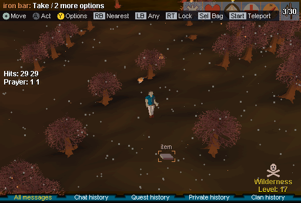

Painted over real frames from the dev client (ATM-001). Answer with the letters, e.g.
night B, dusk 1, rain R2, flash F2, plus anything you want changed. Chat, tabs and the
pad hint row stay bright on purpose: the real effect is drawn under the UI.
The scenes
Day (stock)Lumbridge as the client draws it today.Full cycle (B + 1)Day, dusk, night, dawn: the real hour squeezed into four seconds.SnowWhite Wolf Mountain: soft drifting flakes.BlizzardStorm in the snow biome: thick sideways snow and a white haze, no lightning.

Wilderness ashGrey ash drifting down, a few rising embers, a dull red-grey cast.SandstormAl Kharid: yellow haze and sand blowing sideways.Karamja downpourShort tropical burst: dense near-vertical rain, misty green.UndergroundThe Dwarven Mine stays exactly as it is: no weather, no night.
Pick one: night darkness
Night ALight night - a moonlit evening; everything readableNight BMedium night - clearly night, a light is welcomeNight CDark night - a light really matters; still playable
Rain R1Fine light rain, nearly straight, sky dulled a little.Rain R2Heavier slanted rain, sky dulled a little.
Pick one: lightning strength
Thunderstorm F1Lightning flash at 35% strength: two quick pulses.Thunderstorm F2Lightning flash at 60% strength: two quick pulses.Thunderstorm F3Lightning flash at 85% strength: two quick pulses.
Your light at night
Torch (night B)Warm flickering pool around you, about 4 tiles.Utevo Lux, fadingCool white light; seven minutes squeezed into two seconds, shrinking as it weakens.